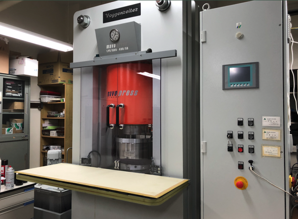

伊賀研究室で使用する代表的な実験装置を紹介します．
四楕円鏡型赤外線加熱単結晶育成装置

楕円の焦点の性質を用いて集光することで，焦点部分のみを2500℃程度で加熱をして試料を溶融することができます．加熱と冷却を同時に行いながら単結晶を育成することができる装置です．
MaVo-Press

伊賀研究室が保有する高圧力発生装置です．最大圧力20GPa(地下660kmの圧力に相当)，最大温度1650℃を記録しています．常圧環境下では作製が報告されていない物質合成に挑戦することができる装置です．
高周波誘導焼成炉

真空焼成をしながら還元反応を促すために使用する装置です．焼成は，大型コイルに交流電流を流し坩堝内に誘導電流を流すことによるジュール熱を用いて加熱をします．
旋盤

高圧合成に使用する圧力媒体内部のパーツは必要に応じて原料棒から作製します．その際に旋盤を用います．
MDX-40A

圧力媒体内部パーツをプログラムによって切削するNC工作機械です．パーツに応じてプログラムをコーディングして切削をします．
Ｘ線回折装置(共同利用)

試料作製をしたら，試料の結晶構造を確認するためにX線回折測定をします．装置は理学部の共同利用です．
電気抵抗測定装置(共同利用)

作製した試料の電気抵抗を絶対零度に近い温度まで冷却しながら測定することができます．こちらの装置も共同利用です．